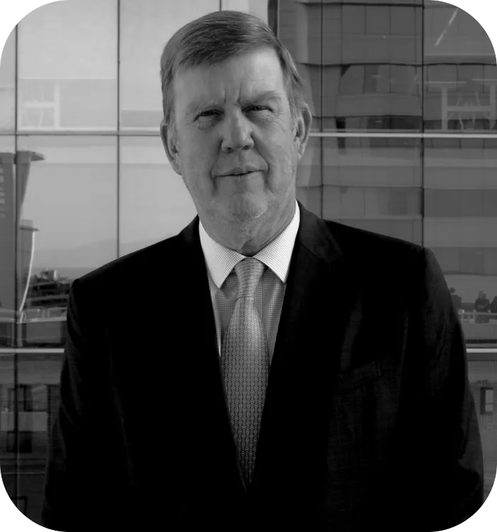
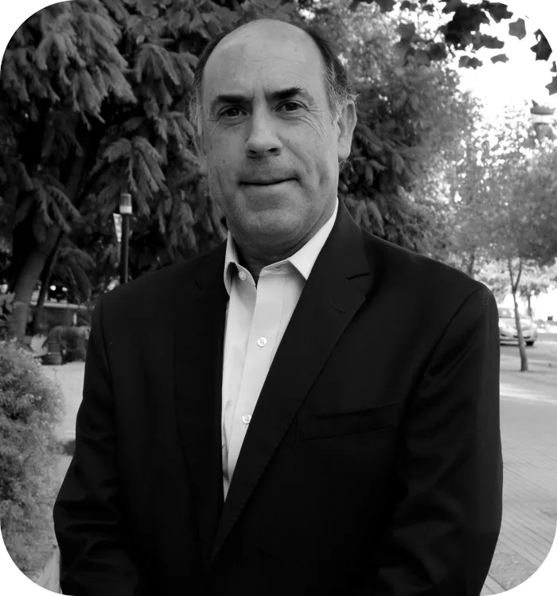
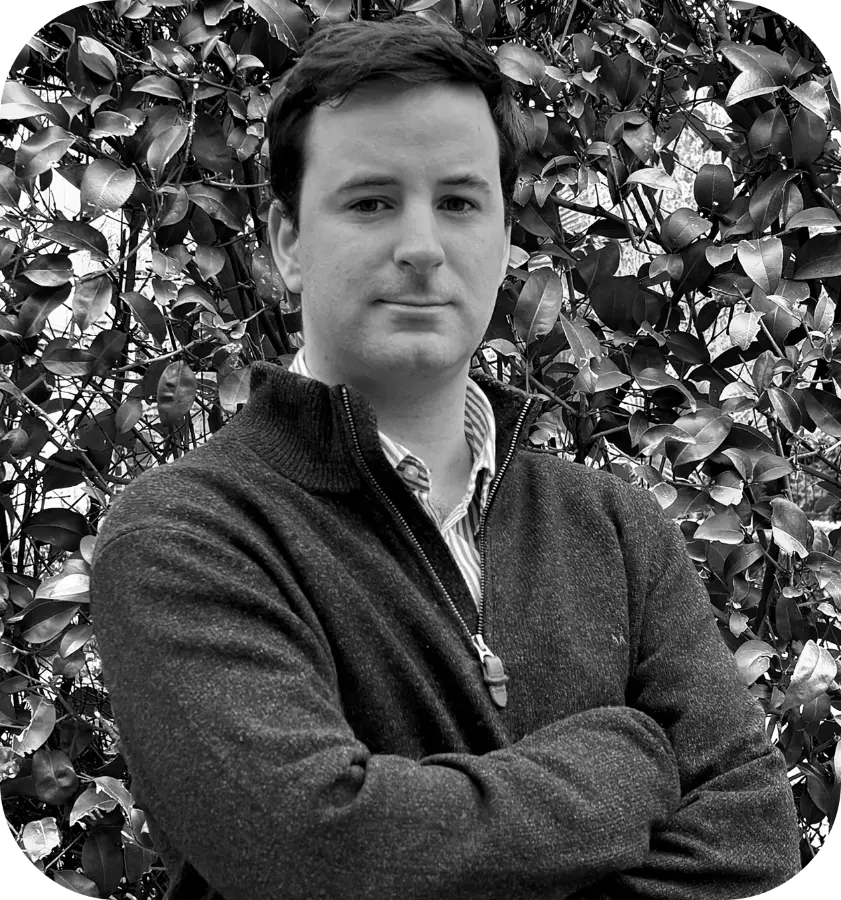
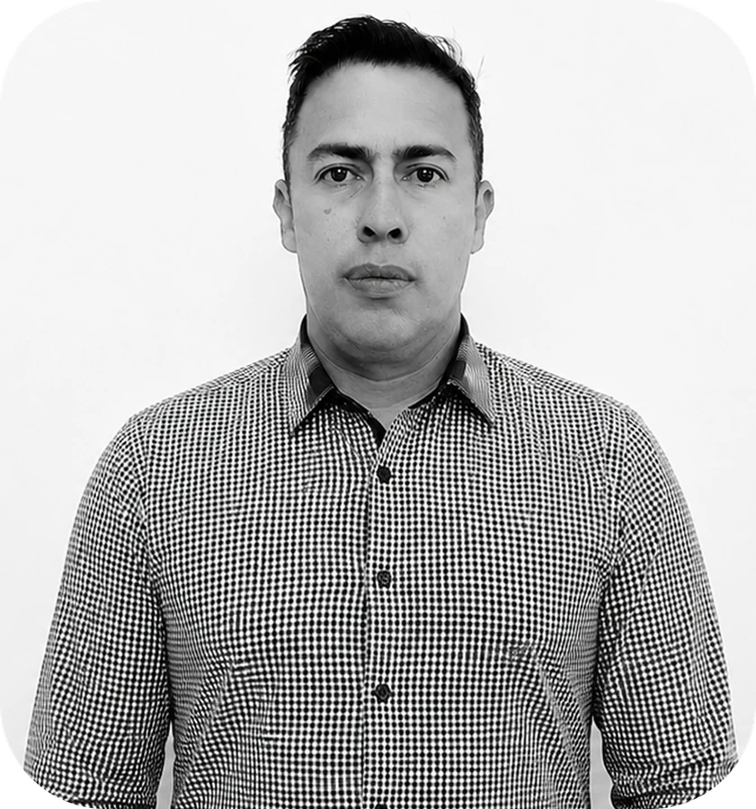
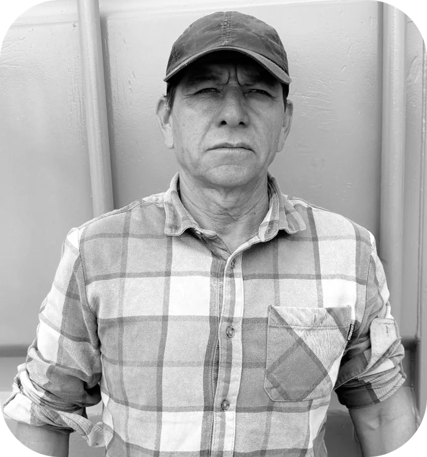
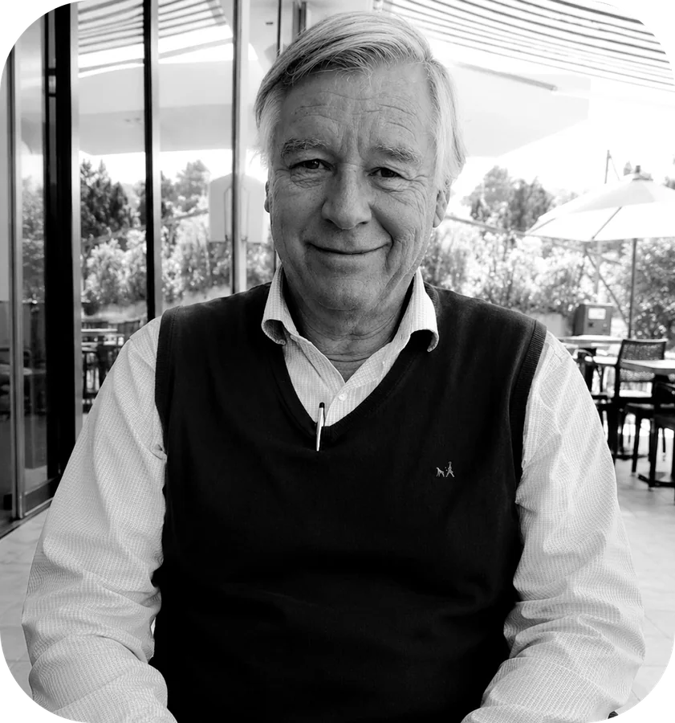

To develop and operate sustainable agricultural projects under high production standards and ESG principles, ensuring sustainable, traceable production aligned with the requirements of global markets.
To contribute to the development of the agro-export sector alongside strategic partners through modern, technology-driven and sustainable practices that generate economic value while respecting and protecting the environment.







